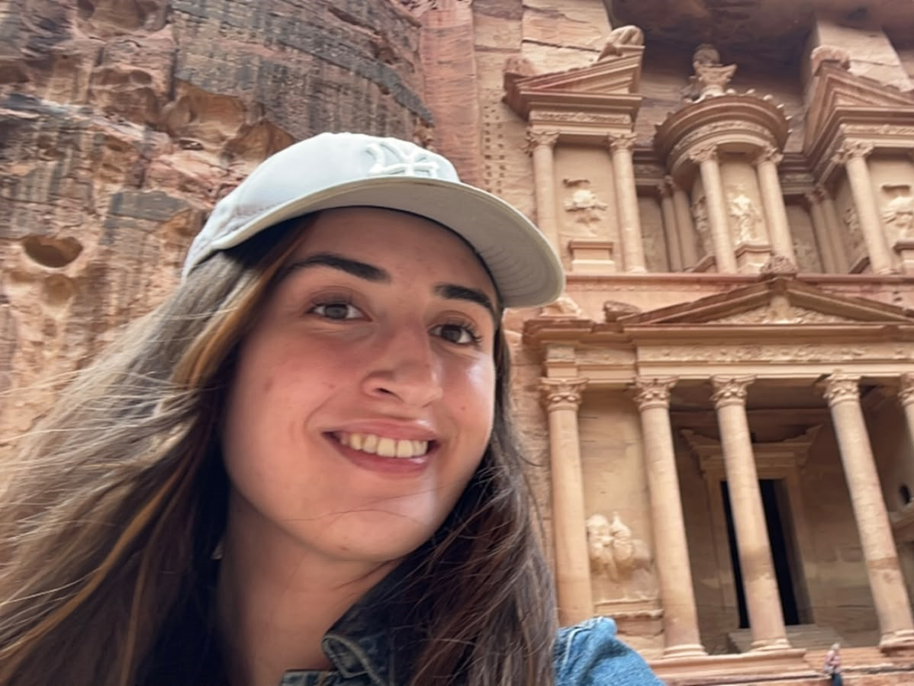

People
The team running WAISI.

Lachlan Ewart
Director
Hi! I'm Lachlan, a third-year maths student. I am currently a SPAR research fellow, and I am interested in monitorability robustness. Outside of AI safety, I sometimes write about philosophy on my Substack.

Erin Gruenberg
Operations Lead
I’m Erin, a second-year philosophy student finding out how to make a positive impact with my career. I’ve written a little bit about AI safety and am exploring what else I can do to help within the field. In my free time, I love solo-travelling and learning photography.
Name Here
Blog Editor
Description